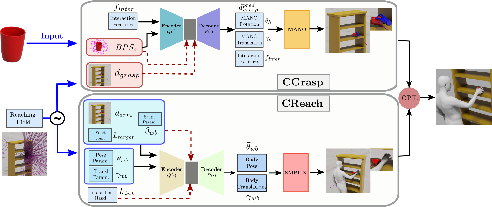
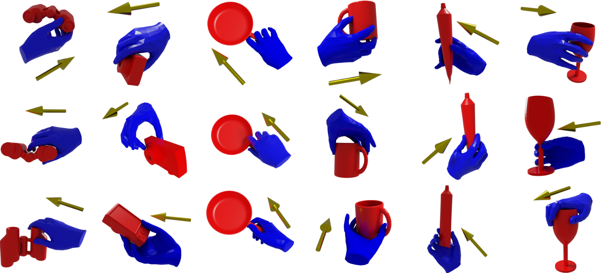
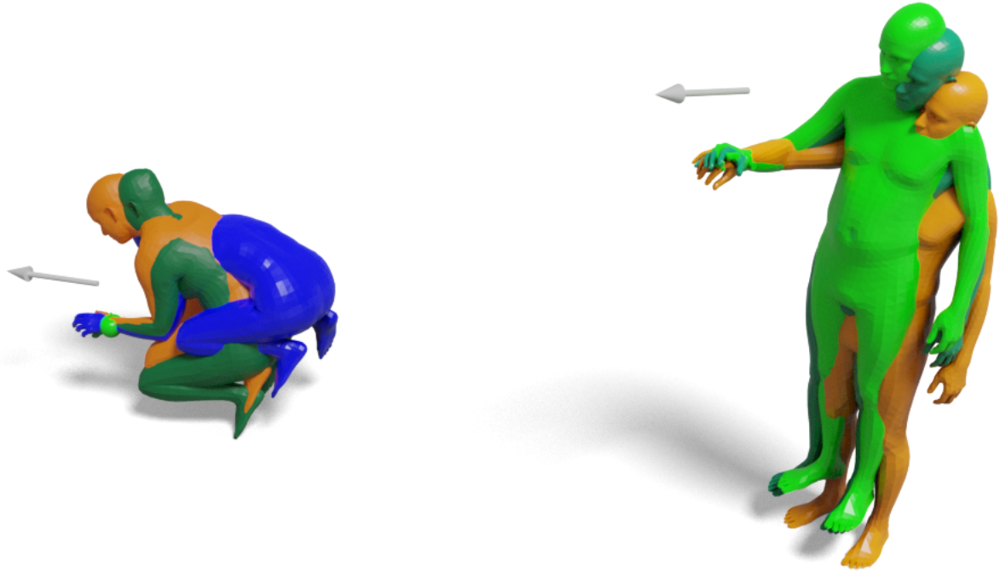

3D Whole-Body Grasp Synthesis with
Directional Controllability
1University of Amsterdam, the Netherlands 2Max Planck Institute for Intelligent Systems, Tübingen, Germany
3DV 2025

We develop CWGrasp, a novel framework for synthesizing 3D whole-body grasps for an object placed on a receptacle. Our framework capitalizes on a novel combination of geometry-based reasoning and controllable data-driven synthesis methods. By adding novel controllability to the synthesis process, we achieve realistic results at a fraction of the computational cost w.r.t. the state of the art.
Abstract
Synthesizing 3D whole bodies that realistically grasp objects is useful for animation, mixed reality, and robotics. This is challenging, because the hands and body need to look natural w.r.t. each other, the grasped object, as well as the local scene (i.e., a receptacle supporting the object). Moreover, training data for this task is really scarce, while capturing new data is expensive. Recent work goes beyond finite datasets via a divide-and-conquer approach; it first generates a “guiding” right-hand grasp, and then searches for bodies that match this. However, the guiding-hand synthesis lacks controllability and receptacle awareness, so it likely has an implausible direction (i.e., a body can’t match this without penetrating the receptacle) and needs corrections through major post-processing. Moreover, the body search needs exhaustive sampling and is expensive. These are strong limitations. We tackle these with a novel method called CWGrasp. Our key idea is that performing geometry-based reasoning “early on,” instead of “too late,” provides rich “control” signals for inference. To this end, CWGrasp first samples a plausible reaching-direction vector (used later for both the arm and hand) from a probabilistic model built via ray-casting from the object and collision checking. Then, it generates a reaching body with a desired arm direction, as well as a “guiding” grasping hand with a desired palm direction that complies with the arm’s one. Eventually, CWGrasp refines the body to match the “guiding” hand, while plausibly contacting the scene. Notably, generating already-compatible “parts” greatly simplifies the “whole”. Moreover, CWGrasp uniquely tackles both right and left-hand grasps. We evaluate on the GRAB and ReplicaGrasp datasets. CWGrasp outperforms baselines, at lower runtime and budget, while all components help performance. Code and models are available at https://gpaschalidis.github.io/cwgrasp.
Method Overview

We first sample a plausible reaching direction from ReachingField. Next, we condition both CGrasp and CReach on this direction and obtain a hand and a body, respectively, that satisfy the sampled direction. Finally, we include an optimization stage to resolve possible penetrations with the surrounding object, while also making the hand and the body arm fully compatible. With our framework, we generate both left-hand and right-hand grasps.
ReachingField
Visualization of how the ReachingField is built for objects on various receptacles at different heights. First, we define a spherical grid around the object and cast rays from the center of the object to all points in the grid. We apply a series of collision tests to all the rays, and from those that pass all tests, we build a probabilistic 3D vector field, called the ReachingField.
CGrasp (Controllable Grasp)

Using CGrasp, we can generate grasping hands that interact plausibly with various objects while satisfying a given grasping direction. In the examples above, the blue hands grasp the red objects realistically, following the directions indicated by the corresponding golden arrows.
CReach (Controllable Reach)

Using CReach, we can generate bodies that reach a target wrist or object location with either the left or right arm, while the arm maintains a desired direction, shown with a gray arrow in the examples above.
Optimization
We depict how the optimization process works both for CWGrasp and FLEX for the same scene. FLEX samples 500 random pairs of bodies and hands that are optimized together; here we depict the best pair. In the first stage the body is far from the object and, as the optimization proceeds, approaches and finally grasps it — yet the final result lacks realism. Conversely, CWGrasp, by leveraging ReachingField, samples just one body and hand, with the body being close to the object from the beginning. The optimization is around 16× faster than FLEX and produces more realistic results.
Qualitative Results
Right-Hand Interactions
Low-height object
Medium-height object
High-height object
Left-Hand Interactions
Acknowledgments
This work is partly supported by the ERC Starting Grant (project STRIPES, 101165317, PI: D. Tzionas). D. Tzionas has received a research gift from Google, and from the NVIDIA Academic Grant Program. This work also used the Dutch national e-infrastructure with the support of the SURF Cooperative using grant no. EINF-10235.
BibTeX
@inproceedings{paschalidis2025cwgrasp,
title = {{3D} {W}hole-Body Grasp Synthesis with Directional Controllability},
author = {Paschalidis, Georgios and Wilschut, Romana and Anti\'{c}, Dimitrije and Taheri, Omid and Tzionas, Dimitrios},
booktitle = {{International Conference on 3D Vision (3DV)}},
year = {2025}
}
Contact
For questions, please contact
g.paschalidis@uva.nl.
For commercial licensing, please contact
g.paschalidis@uva.nl.